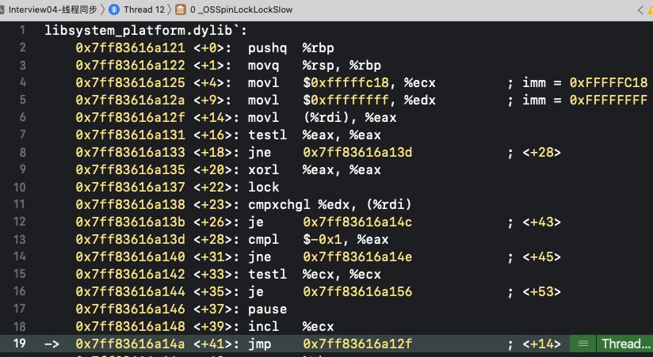
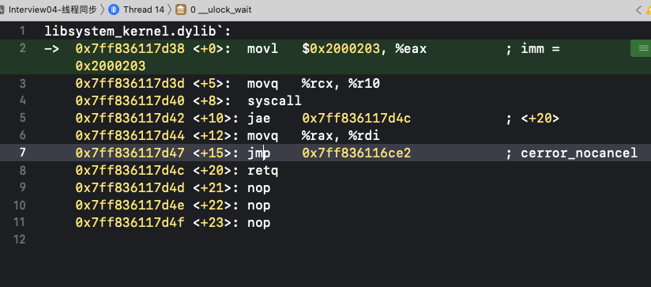
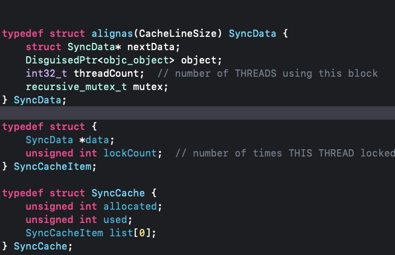

<!DOCTYPE html>


<html lang="en">
  

    <head>
      <meta charset="utf-8" />
        
      <meta
        name="viewport"
        content="width=device-width, initial-scale=1, maximum-scale=1"
      />
      <title>多线程和锁 |  ayer</title>
  <meta name="generator" content="hexo-theme-ayer">
      
      <link rel="shortcut icon" href="/favicon.ico" />
       
<link rel="stylesheet" href="/dist/main.css">

      <link
        rel="stylesheet"
        href="https://cdn.jsdelivr.net/gh/Shen-Yu/cdn/css/remixicon.min.css"
      />
      
<link rel="stylesheet" href="/css/custom.css">
 
      <script src="https://cdn.jsdelivr.net/npm/pace-js@1.0.2/pace.min.js"></script>
       
 

      <!-- mermaid -->
      
      <script src="https://cdn.jsdelivr.net/npm/mermaid@8.9.2/dist/mermaid.min.js"></script>
      
    <link rel="alternate" href="/atom.xml" title="ayer" type="application/atom+xml">
</head>
  </html>
</html>


<body>
  <div id="app">
    
      
    <main class="content on">
      <section class="outer">
  <article
  id="post-iOS学习/多线程/多线程和锁"
  class="article article-type-post"
  itemscope
  itemprop="blogPost"
  data-scroll-reveal
>
  <div class="article-inner">
    
    <header class="article-header">
       
<h1 class="article-title sea-center" style="border-left:0" itemprop="name">
  多线程和锁
</h1>
 

      
    </header>
     
    <div class="article-meta">
      <a href="/2023/02/02/iOS%E5%AD%A6%E4%B9%A0/%E5%A4%9A%E7%BA%BF%E7%A8%8B/%E5%A4%9A%E7%BA%BF%E7%A8%8B%E5%92%8C%E9%94%81/" class="article-date">
  <time datetime="2023-02-02T15:53:50.000Z" itemprop="datePublished">2023-02-02</time>
</a> 
  <div class="article-category">
    <a class="article-category-link" href="/categories/%E5%A4%9A%E7%BA%BF%E7%A8%8B/">多线程</a>
  </div>
  
<div class="word_count">
    <span class="post-time">
        <span class="post-meta-item-icon">
            <i class="ri-quill-pen-line"></i>
            <span class="post-meta-item-text"> Word count:</span>
            <span class="post-count">1.4k</span>
        </span>
    </span>

    <span class="post-time">
        &nbsp; | &nbsp;
        <span class="post-meta-item-icon">
            <i class="ri-book-open-line"></i>
            <span class="post-meta-item-text"> Reading time≈</span>
            <span class="post-count">5 min</span>
        </span>
    </span>
</div>
 
    </div>
      
    <div class="tocbot"></div>


  
    <div class="article-entry" itemprop="articleBody">
       
  <h2 id="多线程的安全隐患"><a href="#多线程的安全隐患" class="headerlink" title="多线程的安全隐患"></a>多线程的安全隐患</h2><ul>
<li>资源共享<ul>
<li>1块资源可能会被多个线程共享，也就是多个线程可能会访问同一块资源</li>
<li>比如多个线程访问同一个对象、同一个变量、同一个文件</li>
</ul>
</li>
<li>当多个线程访问同一块资源时，很容易引发数据错乱和数据安全问题<h2 id="OS中的线程同步方案"><a href="#OS中的线程同步方案" class="headerlink" title="OS中的线程同步方案"></a>OS中的线程同步方案</h2></li>
</ul>
<ol>
<li>OSSpinLock</li>
<li>os_unfair_lock</li>
<li>pthread_mutex</li>
<li>dispatch_semaphore</li>
<li>dispatch_queue(DISPATCH_QUEUE_SERIAL)</li>
<li>NSLock</li>
<li>NSRecursiveLock</li>
<li>NSCondition</li>
<li>NSConditionLock</li>
<li>@synchronized<h3 id="OSSpinLock"><a href="#OSSpinLock" class="headerlink" title="OSSpinLock"></a>OSSpinLock</h3><blockquote>
<p>OSSpinLock叫做”自旋锁”，等待锁的线程会处于忙等（busy-wait）状态，一直占用着CPU资源</p>
<ul>
<li>目前已经不再安全，可能会出现优先级反转问题<ul>
<li>如果等待锁的线程优先级较高，它会一直占用着CPU资源；获得锁的优先级低的线程，没有CPU资源，分配不到时间片，无法执行完，就无法释放锁<ul>
<li>多线程原理是，操作系统通过<code>时间片轮转算法</code>，每次给一个线程一个时间片，让其可以执行,(如果所给的时间片足够短，则看起来是同时执行的</li>
</ul>
</li>
</ul>
</li>
</ul>
</blockquote>
<h4 id="使用教程"><a href="#使用教程" class="headerlink" title="使用教程"></a>使用教程</h4><blockquote>
<p>iOS10以上由于优先级反转的问题，导致被废弃，系统建议使用os_unfair_lock</p>
</blockquote>
<figure class="highlight plaintext"><table><tr><td class="gutter"><pre><span class="line">1</span><br><span class="line">2</span><br><span class="line">3</span><br><span class="line">4</span><br><span class="line">5</span><br><span class="line">6</span><br><span class="line">7</span><br></pre></td><td class="code"><pre><span class="line">#import &lt;libkern/OSAtomic.h&gt;</span><br><span class="line"></span><br><span class="line">OSSpinLock _lock = OS_SPINLOCK_INIT;//多个线程持有同一个锁</span><br><span class="line"></span><br><span class="line">OSSpinLockLock(&amp;_lock);</span><br><span class="line">//需要同步的代码</span><br><span class="line">OSSpinLockUnlock(&amp;_lock)</span><br></pre></td></tr></table></figure>
<h4 id="自旋锁逻辑查看"><a href="#自旋锁逻辑查看" class="headerlink" title="自旋锁逻辑查看"></a>自旋锁逻辑查看</h4></li>
</ol>
<ul>
<li>汇编源码查看线程等待锁时，所做的事，通过lldb的<code>s</code>是代码级别的,<code>si</code>(stepi)是汇编级别的，一步步查看汇编执行，<code>ni</code>(next)指令遇到函数级别的调用会跳过<ul>
<li>如果可以获取到锁，则不会走<code>_OSSPinLockLockSlow</code>,直接执行同步代码<br></li>
<li>如果没有无法获取到锁，则会走<code>_OSSPinLockLockSlow</code>方法中，类似while循环调用，线程不会休眠<br></li>
</ul>
</li>
</ul>
<h3 id="pthread-mutex"><a href="#pthread-mutex" class="headerlink" title="pthread_mutex"></a>pthread_mutex</h3><blockquote>
<ul>
<li>mutex叫做”互斥锁”，等待锁的线程会处于休眠状态<ul>
<li>pthread_mutex可以在多个平台上使用(window、linux、macos)都可以使用</li>
</ul>
</li>
</ul>
</blockquote>
<h4 id="使用教程-1"><a href="#使用教程-1" class="headerlink" title="使用教程"></a>使用教程</h4><figure class="highlight plaintext"><table><tr><td class="gutter"><pre><span class="line">1</span><br><span class="line">2</span><br><span class="line">3</span><br><span class="line">4</span><br><span class="line">5</span><br><span class="line">6</span><br><span class="line">7</span><br><span class="line">8</span><br><span class="line">9</span><br><span class="line">10</span><br><span class="line">11</span><br><span class="line">12</span><br><span class="line">13</span><br><span class="line">14</span><br></pre></td><td class="code"><pre><span class="line">#import &lt;pthread/pthread.h&gt;</span><br><span class="line"></span><br><span class="line">pthread_mutex_t _pthreadMutex;</span><br><span class="line">//初始化属性</span><br><span class="line">pthread_mutexattr_t attr;</span><br><span class="line">pthread_mutexattr_init(&amp;attr);</span><br><span class="line">pthread_mutexattr_settype(&amp;attr, PTHREAD_MUTEX_NORMAL);</span><br><span class="line">//初始化锁</span><br><span class="line">pthread_mutex_init(&amp;_pthreadMutex, &amp;attr);</span><br><span class="line">//pthread_mutex_init(&amp;_pthreadMutex, NULL);传null为DEFALT，即NORMAL</span><br><span class="line">//销毁属性</span><br><span class="line">pthread_mutexattr_destroy(&amp;attr);</span><br><span class="line">//不用锁之后需要销毁</span><br><span class="line">pthread_mutex_destroy(&amp;_pthreadMutex);</span><br></pre></td></tr></table></figure>
<h4 id="属性类型"><a href="#属性类型" class="headerlink" title="属性类型"></a>属性类型</h4><figure class="highlight plaintext"><table><tr><td class="gutter"><pre><span class="line">1</span><br><span class="line">2</span><br><span class="line">3</span><br></pre></td><td class="code"><pre><span class="line">#define PTHREAD_MUTEX_NORMAL		0</span><br><span class="line">#define PTHREAD_MUTEX_ERRORCHECK	1</span><br><span class="line">#define PTHREAD_MUTEX_RECURSIVE	  2</span><br></pre></td></tr></table></figure>
<h4 id="递归锁，"><a href="#递归锁，" class="headerlink" title="递归锁，"></a>递归锁，</h4><blockquote>
<p>允许<code>**同一个线程**</code>对<code>**一把锁**</code>重复多次加锁，而不会造成死锁,<br>    - 注意，多个线程访问的话，一个线程持有之后，另一个线程访问，同样会被阻塞，休眠，直到递归锁被释放。</p>
</blockquote>
<figure class="highlight plaintext"><table><tr><td class="gutter"><pre><span class="line">1</span><br><span class="line">2</span><br><span class="line">3</span><br></pre></td><td class="code"><pre><span class="line">pthread_mutexattr_settype(&amp;attr, PTHREAD_MUTEX_RECURSIVE);</span><br><span class="line">//初始化递归锁</span><br><span class="line">pthread_mutex_init(&amp;_pthreadMutex, &amp;attr);</span><br></pre></td></tr></table></figure>
<h4 id="条件锁"><a href="#条件锁" class="headerlink" title="条件锁"></a>条件锁</h4><figure class="highlight plaintext"><table><tr><td class="gutter"><pre><span class="line">1</span><br><span class="line">2</span><br><span class="line">3</span><br><span class="line">4</span><br><span class="line">5</span><br><span class="line">6</span><br><span class="line">7</span><br><span class="line">8</span><br><span class="line">9</span><br><span class="line">10</span><br><span class="line">11</span><br><span class="line">12</span><br><span class="line">13</span><br><span class="line">14</span><br><span class="line">15</span><br><span class="line">16</span><br><span class="line">17</span><br><span class="line">18</span><br><span class="line">19</span><br><span class="line">20</span><br><span class="line">21</span><br><span class="line">22</span><br><span class="line">23</span><br><span class="line">24</span><br><span class="line">25</span><br><span class="line">26</span><br><span class="line">27</span><br><span class="line">28</span><br><span class="line">29</span><br><span class="line">30</span><br><span class="line">31</span><br></pre></td><td class="code"><pre><span class="line">// 初始化条件</span><br><span class="line">pthread_cond_t _cond;</span><br><span class="line">pthread_cond_init(&amp;_cond, NULL);</span><br><span class="line">//销毁</span><br><span class="line">pthread_cond_destroy(&amp;_cond);</span><br><span class="line"></span><br><span class="line">//执行</span><br><span class="line">[[[NSThread alloc] initWithTarget:self selector:@selector(__remove) object:nil] start];</span><br><span class="line">[[[NSThread alloc] initWithTarget:self selector:@selector(__add) object:nil] start];</span><br><span class="line">//删除方法</span><br><span class="line">- (void)__remove &#123;</span><br><span class="line">    pthread_mutex_lock(&amp;_mutex);</span><br><span class="line">    if (self.data.count == 0) &#123;</span><br><span class="line">      // 等待，线程进行休眠，并且会释放该锁</span><br><span class="line">     pthread_cond_wait(&amp;_cond, &amp;_mutex);</span><br><span class="line">     //当被signal唤醒之后，继续加锁，然后由后面unlock进行解锁</span><br><span class="line">    &#125;</span><br><span class="line">    [self.data removeLastObject];</span><br><span class="line">     pthread_mutex_unlock(&amp;_mutex); </span><br><span class="line">&#125;</span><br><span class="line">- (void)__add &#123;</span><br><span class="line">    //添加方法</span><br><span class="line">    pthread_mutex_lock(&amp;_mutex);</span><br><span class="line">    [self.data addObject:@&quot;Test&quot;]; </span><br><span class="line">    // 信号，会唤醒一个等待的线程，让删除方法的线程继续执行</span><br><span class="line">    pthread_cond_signal(&amp;_cond);//放在unlock前面，则wait会先唤醒，并且在等待锁释放</span><br><span class="line">    // 广播，唤醒所有等待的线程</span><br><span class="line">    //pthread_cond_broadcast(&amp;_cond);</span><br><span class="line">    pthread_mutex_unlock(&amp;_mutex);</span><br><span class="line">    //pthread_cond_signal(&amp;_cond);//放在unlock后面，则wait唤醒之后，可以立刻获取锁</span><br><span class="line">&#125; </span><br></pre></td></tr></table></figure>
<h4 id="互斥锁逻辑查看"><a href="#互斥锁逻辑查看" class="headerlink" title="互斥锁逻辑查看"></a>互斥锁逻辑查看</h4><ul>
<li>汇编源码查看线程等待锁时，所做的事<ol>
<li>在<code>pthread_mutex_lock</code>方法中,如果可以获取到锁，则会直接retq返回，没有则会执行<code>_pthread_mutex_firstfit_lock_slow</code>方法<br> </li>
<li>在这个方法中最总会执行到<code>_pthread_mutex_firstfit_lock_wait</code>方法中<br> </li>
<li>调用__psynch_mutexwait方法<br></li>
<li>在该方法中，最后会走到<code>**syscall**</code>方法，系统调用方法，<code>si</code>执行终止，由系统调用让线程进入了休眠的状态。<br></li>
</ol>
</li>
</ul>
<h3 id="os-unfair-lock"><a href="#os-unfair-lock" class="headerlink" title="os_unfair_lock"></a>os_unfair_lock</h3><blockquote>
<ul>
<li>os_unfair_lock用于取代不安全的OSSpinLock ，从iOS10开始才支持<ul>
<li>从底层调用看，等待os_unfair_lock锁的线程会处于休眠状态，并非忙等</li>
</ul>
</li>
</ul>
</blockquote>
<ul>
<li>使用教程<figure class="highlight plaintext"><table><tr><td class="gutter"><pre><span class="line">1</span><br><span class="line">2</span><br><span class="line">3</span><br><span class="line">4</span><br><span class="line">5</span><br><span class="line">6</span><br><span class="line">7</span><br></pre></td><td class="code"><pre><span class="line">#import &lt;os/lock.h&gt;</span><br><span class="line"></span><br><span class="line">os_unfair_lock _lock = OS_UNFAIR_LOCK_INIT;</span><br><span class="line"></span><br><span class="line">os_unfair_lock_lock(&amp;_lock);</span><br><span class="line"> //需要同步的代码</span><br><span class="line"> os_unfair_lock_unlock(&amp;_lock);</span><br></pre></td></tr></table></figure></li>
<li>汇编发现是一种互斥锁,和<code>pthread_mutex</code>一样，等待锁会走到<code>**syscall**</code>方法,系统调用使得线程进入休眠状态<br><h3 id="NSLOCK、NSRecursiveLock"><a href="#NSLOCK、NSRecursiveLock" class="headerlink" title="NSLOCK、NSRecursiveLock"></a>NSLOCK、NSRecursiveLock</h3><blockquote>
<p>NSLock是对mutex普通锁的封装<br>NSRecursiveLock也是对mutex递归锁的封装，API跟NSLock基本一致</p>
</blockquote>
</li>
<li>使用教程<figure class="highlight plaintext"><table><tr><td class="gutter"><pre><span class="line">1</span><br><span class="line">2</span><br><span class="line">3</span><br><span class="line">4</span><br><span class="line">5</span><br><span class="line">6</span><br></pre></td><td class="code"><pre><span class="line">NSLock *_lock = [[NSLock alloc] init];</span><br><span class="line">//NSRecursiveLock *_lock = [[NSRecursiveLock alloc] init];</span><br><span class="line">//均实现了&lt;NSLocking&gt;协议</span><br><span class="line">[_lock lock]</span><br><span class="line">//[_lock tryLock]</span><br><span class="line">[_lock unlock]</span><br></pre></td></tr></table></figure>
<h3 id="NSCondition"><a href="#NSCondition" class="headerlink" title="NSCondition"></a>NSCondition</h3><blockquote>
<p>NSCondition是对mutex和cond的封装</p>
</blockquote>
<figure class="highlight plaintext"><table><tr><td class="gutter"><pre><span class="line">1</span><br><span class="line">2</span><br><span class="line">3</span><br><span class="line">4</span><br><span class="line">5</span><br><span class="line">6</span><br></pre></td><td class="code"><pre><span class="line">@interface NSCondition : NSObject &lt;NSLocking&gt;</span><br><span class="line">- (void)wait</span><br><span class="line">- (BOOL)waitUntilDate:(NSDate *)limit N</span><br><span class="line">- (void)signal </span><br><span class="line">- (void)broadcast;</span><br><span class="line">@end</span><br></pre></td></tr></table></figure>
<h3 id="NSConditionLock"><a href="#NSConditionLock" class="headerlink" title="NSConditionLock"></a>NSConditionLock</h3><blockquote>
<p>NSConditionLock是对NSCondition的进一步封装，可以设置具体的条件值.</p>
<ul>
<li><code>lockWhenCondition:</code>只有满足具体条件值的才能获取到锁，<code>unlockWithCondition:</code>解锁可以重新设定(如果不传值，初始化，默认是0)</li>
<li><code>lock</code>和之前一样直接加锁，不会根据条件值来判断</li>
</ul>
</blockquote>
</li>
</ul>
<p></p>
<h3 id="dispatch-queue-DISPATCH-QUEUE-SERIAL"><a href="#dispatch-queue-DISPATCH-QUEUE-SERIAL" class="headerlink" title="dispatch_queue(DISPATCH_QUEUE_SERIAL)"></a>dispatch_queue(DISPATCH_QUEUE_SERIAL)</h3><blockquote>
<p>直接使用GCD的串行队列，也是可以实现线程同步的</p>
</blockquote>
<p></p>
<h3 id="dispatch-semaphore"><a href="#dispatch-semaphore" class="headerlink" title="dispatch_semaphore"></a>dispatch_semaphore</h3><blockquote>
<ul>
<li>semaphore叫做”信号量”<ul>
<li>信号量的初始值，可以用来控制线程并发访问的最大数量</li>
<li>信号量的初始值为1，代表同时只允许1条线程访问资源，保证线程同步</li>
</ul>
</li>
</ul>
</blockquote>
<p></p>
<h3 id="synchronized"><a href="#synchronized" class="headerlink" title="@synchronized"></a>@synchronized</h3><blockquote>
<p>@synchronized是对mutex递归锁的封装,在最新版本中，锁已经改为os_unfair_lock了，但仍可实现递归，（os_unfair_lock是不支持递归的，代码做了优化，未开源）<br>源码查看：objc4中的objc-sync.mm文件<br>@synchronized(obj)内部会生成obj对应的递归锁，然后进行加锁、解锁操作</p>
</blockquote>
<ul>
<li>使用<figure class="highlight plaintext"><table><tr><td class="gutter"><pre><span class="line">1</span><br><span class="line">2</span><br><span class="line">3</span><br></pre></td><td class="code"><pre><span class="line">@synchronized (self) &#123;</span><br><span class="line">       </span><br><span class="line">&#125;</span><br></pre></td></tr></table></figure></li>
<li>重要数据结构<br></li>
<li>723以及之前的版本，用的是<code>pthread_mutex_t</code><br></li>
<li>723之后的版本，用的是<code>os_unfair_lock</code><br><br></li>
</ul>
 
      <!-- reward -->
      
    </div>
    

    <!-- copyright -->
    
    <div class="declare">
      <ul class="post-copyright">
        <li>
          <i class="ri-copyright-line"></i>
          <strong>Copyright： </strong>
          
          Copyright is owned by the author. For commercial reprints, please contact the author for authorization. For non-commercial reprints, please indicate the source.
          
        </li>
      </ul>
    </div>
    
    <footer class="article-footer">
       
<div class="share-btn">
      <span class="share-sns share-outer">
        <i class="ri-share-forward-line"></i>
        分享
      </span>
      <div class="share-wrap">
        <i class="arrow"></i>
        <div class="share-icons">
          
          <a class="weibo share-sns" href="javascript:;" data-type="weibo">
            <i class="ri-weibo-fill"></i>
          </a>
          <a class="weixin share-sns wxFab" href="javascript:;" data-type="weixin">
            <i class="ri-wechat-fill"></i>
          </a>
          <a class="qq share-sns" href="javascript:;" data-type="qq">
            <i class="ri-qq-fill"></i>
          </a>
          <a class="douban share-sns" href="javascript:;" data-type="douban">
            <i class="ri-douban-line"></i>
          </a>
          <!-- <a class="qzone share-sns" href="javascript:;" data-type="qzone">
            <i class="icon icon-qzone"></i>
          </a> -->
          
          <a class="facebook share-sns" href="javascript:;" data-type="facebook">
            <i class="ri-facebook-circle-fill"></i>
          </a>
          <a class="twitter share-sns" href="javascript:;" data-type="twitter">
            <i class="ri-twitter-fill"></i>
          </a>
          <a class="google share-sns" href="javascript:;" data-type="google">
            <i class="ri-google-fill"></i>
          </a>
        </div>
      </div>
</div>

<div class="wx-share-modal">
    <a class="modal-close" href="javascript:;"><i class="ri-close-circle-line"></i></a>
    <p>扫一扫，分享到微信</p>
    <div class="wx-qrcode">
      
    </div>
</div>

<div id="share-mask"></div>  
    </footer>
  </div>

   
  <nav class="article-nav">
    
      <a href="/2023/02/12/iOS%E5%AD%A6%E4%B9%A0/%E5%A4%9A%E7%BA%BF%E7%A8%8B/%E8%AF%BB%E5%86%99%E9%94%81/" class="article-nav-link">
        <strong class="article-nav-caption">上一篇</strong>
        <div class="article-nav-title">
          
            读写锁
          
        </div>
      </a>
    
    
      <a href="/2023/01/31/iOS%E5%AD%A6%E4%B9%A0/%E5%A4%9A%E7%BA%BF%E7%A8%8B/%E5%A4%9A%E7%BA%BF%E7%A8%8B/" class="article-nav-link">
        <strong class="article-nav-caption">下一篇</strong>
        <div class="article-nav-title">多线程的问题</div>
      </a>
    
  </nav>

   
<!-- valine评论 -->
<div id="vcomments-box">
  <div id="vcomments"></div>
</div>
<script src="//cdn1.lncld.net/static/js/3.0.4/av-min.js"></script>
<script src="https://cdn.jsdelivr.net/npm/valine@1.4.14/dist/Valine.min.js"></script>
<script>
  new Valine({
    el: "#vcomments",
    app_id: "",
    app_key: "",
    path: window.location.pathname,
    avatar: "monsterid",
    placeholder: "给我的文章加点评论吧~",
    recordIP: true,
  });
  const infoEle = document.querySelector("#vcomments .info");
  if (infoEle && infoEle.childNodes && infoEle.childNodes.length > 0) {
    infoEle.childNodes.forEach(function (item) {
      item.parentNode.removeChild(item);
    });
  }
</script>
<style>
  #vcomments-box {
    padding: 5px 30px;
  }

  @media screen and (max-width: 800px) {
    #vcomments-box {
      padding: 5px 0px;
    }
  }

  #vcomments-box #vcomments {
    background-color: #fff;
  }

  .v .vlist .vcard .vh {
    padding-right: 20px;
  }

  .v .vlist .vcard {
    padding-left: 10px;
  }
</style>

 
   
     
</article>

</section>
      <footer class="footer">
  <div class="outer">
    <ul>
      <li>
        Copyrights &copy;
        2021-2023
        <i class="ri-heart-fill heart_icon"></i> jingbo
      </li>
    </ul>
    <ul>
      <li>
        
        
        
        Powered by <a href="https://hexo.io" target="_blank">Hexo</a>
        <span class="division">|</span>
        Theme - <a href="https://github.com/Shen-Yu/hexo-theme-ayer" target="_blank">Ayer</a>
        
      </li>
    </ul>
    <ul>
      <li>
        
        
        <span>
  <span><i class="ri-user-3-fill"></i>Visitors:<span id="busuanzi_value_site_uv"></span></span>
  <span class="division">|</span>
  <span><i class="ri-eye-fill"></i>Views:<span id="busuanzi_value_page_pv"></span></span>
</span>
        
      </li>
    </ul>
    <ul>
      
    </ul>
    <ul>
      
    </ul>
    <ul>
      <li>
        <!-- cnzz统计 -->
        
        <script type="text/javascript" src='https://s9.cnzz.com/z_stat.php?id=1278069914&amp;web_id=1278069914'></script>
        
      </li>
    </ul>
  </div>
</footer>
      <div class="float_btns">
        <div class="totop" id="totop">
  <i class="ri-arrow-up-line"></i>
</div>

<div class="todark" id="todark">
  <i class="ri-moon-line"></i>
</div>

      </div>
    </main>
    <aside class="sidebar on">
      <button class="navbar-toggle"></button>
<nav class="navbar">
  
  <div class="logo">
    <a href="/"></a>
  </div>
  
  <ul class="nav nav-main">
    
    <li class="nav-item">
      <a class="nav-item-link" href="/">主页</a>
    </li>
    
    <li class="nav-item">
      <a class="nav-item-link" href="/archives">归档</a>
    </li>
    
    <li class="nav-item">
      <a class="nav-item-link" href="/categories">分类</a>
    </li>
    
    <li class="nav-item">
      <a class="nav-item-link" href="/tags">标签</a>
    </li>
    
    <li class="nav-item">
      <a class="nav-item-link" href="/photos">相册</a>
    </li>
    
  </ul>
</nav>
<nav class="navbar navbar-bottom">
  <ul class="nav">
    <li class="nav-item">
      
      <a class="nav-item-link nav-item-search"  title="Search">
        <i class="ri-search-line"></i>
      </a>
      
      
      <a class="nav-item-link" target="_blank" href="/atom.xml" title="RSS Feed">
        <i class="ri-rss-line"></i>
      </a>
      
    </li>
  </ul>
</nav>
<div class="search-form-wrap">
  <div class="local-search local-search-plugin">
  <input type="search" id="local-search-input" class="local-search-input" placeholder="Search...">
  <div id="local-search-result" class="local-search-result"></div>
</div>
</div>
    </aside>
    <div id="mask"></div>

<!-- #reward -->
<div id="reward">
  <span class="close"><i class="ri-close-line"></i></span>
  <p class="reward-p"><i class="ri-cup-line"></i>请我喝杯咖啡吧~</p>
  <div class="reward-box">
    
    <div class="reward-item">
      
      <span class="reward-type">支付宝</span>
    </div>
    
    
    <div class="reward-item">
      
      <span class="reward-type">微信</span>
    </div>
    
  </div>
</div>
    
<script src="/js/jquery-2.0.3.min.js"></script>
 
<script src="/js/lazyload.min.js"></script>

<!-- Tocbot -->
 
<script src="/js/tocbot.min.js"></script>

<script>
  tocbot.init({
    tocSelector: ".tocbot",
    contentSelector: ".article-entry",
    headingSelector: "h1, h2, h3, h4, h5, h6",
    hasInnerContainers: true,
    scrollSmooth: true,
    scrollContainer: "main",
    positionFixedSelector: ".tocbot",
    positionFixedClass: "is-position-fixed",
    fixedSidebarOffset: "auto",
  });
</script>

<script src="https://cdn.jsdelivr.net/npm/jquery-modal@0.9.2/jquery.modal.min.js"></script>
<link
  rel="stylesheet"
  href="https://cdn.jsdelivr.net/npm/jquery-modal@0.9.2/jquery.modal.min.css"
/>
<script src="https://cdn.jsdelivr.net/npm/justifiedGallery@3.7.0/dist/js/jquery.justifiedGallery.min.js"></script>

<script src="/dist/main.js"></script>

<!-- ImageViewer -->
 <!-- Root element of PhotoSwipe. Must have class pswp. -->
<div class="pswp" tabindex="-1" role="dialog" aria-hidden="true">

    <!-- Background of PhotoSwipe. 
         It's a separate element as animating opacity is faster than rgba(). -->
    <div class="pswp__bg"></div>

    <!-- Slides wrapper with overflow:hidden. -->
    <div class="pswp__scroll-wrap">

        <!-- Container that holds slides. 
            PhotoSwipe keeps only 3 of them in the DOM to save memory.
            Don't modify these 3 pswp__item elements, data is added later on. -->
        <div class="pswp__container">
            <div class="pswp__item"></div>
            <div class="pswp__item"></div>
            <div class="pswp__item"></div>
        </div>

        <!-- Default (PhotoSwipeUI_Default) interface on top of sliding area. Can be changed. -->
        <div class="pswp__ui pswp__ui--hidden">

            <div class="pswp__top-bar">

                <!--  Controls are self-explanatory. Order can be changed. -->

                <div class="pswp__counter"></div>

                <button class="pswp__button pswp__button--close" title="Close (Esc)"></button>

                <button class="pswp__button pswp__button--share" style="display:none" title="Share"></button>

                <button class="pswp__button pswp__button--fs" title="Toggle fullscreen"></button>

                <button class="pswp__button pswp__button--zoom" title="Zoom in/out"></button>

                <!-- Preloader demo http://codepen.io/dimsemenov/pen/yyBWoR -->
                <!-- element will get class pswp__preloader--active when preloader is running -->
                <div class="pswp__preloader">
                    <div class="pswp__preloader__icn">
                        <div class="pswp__preloader__cut">
                            <div class="pswp__preloader__donut"></div>
                        </div>
                    </div>
                </div>
            </div>

            <div class="pswp__share-modal pswp__share-modal--hidden pswp__single-tap">
                <div class="pswp__share-tooltip"></div>
            </div>

            <button class="pswp__button pswp__button--arrow--left" title="Previous (arrow left)">
            </button>

            <button class="pswp__button pswp__button--arrow--right" title="Next (arrow right)">
            </button>

            <div class="pswp__caption">
                <div class="pswp__caption__center"></div>
            </div>

        </div>

    </div>

</div>

<link rel="stylesheet" href="https://cdn.jsdelivr.net/npm/photoswipe@4.1.3/dist/photoswipe.min.css">
<link rel="stylesheet" href="https://cdn.jsdelivr.net/npm/photoswipe@4.1.3/dist/default-skin/default-skin.min.css">
<script src="https://cdn.jsdelivr.net/npm/photoswipe@4.1.3/dist/photoswipe.min.js"></script>
<script src="https://cdn.jsdelivr.net/npm/photoswipe@4.1.3/dist/photoswipe-ui-default.min.js"></script>

<script>
    function viewer_init() {
        let pswpElement = document.querySelectorAll('.pswp')[0];
        let $imgArr = document.querySelectorAll(('.article-entry img:not(.reward-img)'))

        $imgArr.forEach(($em, i) => {
            $em.onclick = () => {
                // slider展开状态
                // todo: 这样不好，后面改成状态
                if (document.querySelector('.left-col.show')) return
                let items = []
                $imgArr.forEach(($em2, i2) => {
                    let img = $em2.getAttribute('data-idx', i2)
                    let src = $em2.getAttribute('data-target') || $em2.getAttribute('src')
                    let title = $em2.getAttribute('alt')
                    // 获得原图尺寸
                    const image = new Image()
                    image.src = src
                    items.push({
                        src: src,
                        w: image.width || $em2.width,
                        h: image.height || $em2.height,
                        title: title
                    })
                })
                var gallery = new PhotoSwipe(pswpElement, PhotoSwipeUI_Default, items, {
                    index: parseInt(i)
                });
                gallery.init()
            }
        })
    }
    viewer_init()
</script> 
<!-- MathJax -->
 <script type="text/x-mathjax-config">
  MathJax.Hub.Config({
      tex2jax: {
          inlineMath: [ ['$','$'], ["\\(","\\)"]  ],
          processEscapes: true,
          skipTags: ['script', 'noscript', 'style', 'textarea', 'pre', 'code']
      }
  });

  MathJax.Hub.Queue(function() {
      var all = MathJax.Hub.getAllJax(), i;
      for(i=0; i < all.length; i += 1) {
          all[i].SourceElement().parentNode.className += ' has-jax';
      }
  });
</script>

<script src="https://cdn.jsdelivr.net/npm/mathjax@2.7.6/unpacked/MathJax.js?config=TeX-AMS-MML_HTMLorMML"></script>
<script>
  var ayerConfig = {
    mathjax: true,
  };
</script>

<!-- Katex -->

<!-- busuanzi  -->
 
<script src="/js/busuanzi-2.3.pure.min.js"></script>
 
<!-- ClickLove -->
 
<script src="/js/clickLove.js"></script>
 
<!-- ClickBoom1 -->

<!-- ClickBoom2 -->

<!-- CodeCopy -->
 
<link rel="stylesheet" href="/css/clipboard.css">
 <script src="https://cdn.jsdelivr.net/npm/clipboard@2/dist/clipboard.min.js"></script>
<script>
  function wait(callback, seconds) {
    var timelag = null;
    timelag = window.setTimeout(callback, seconds);
  }
  !function (e, t, a) {
    var initCopyCode = function(){
      var copyHtml = '';
      copyHtml += '<button class="btn-copy" data-clipboard-snippet="">';
      copyHtml += '<i class="ri-file-copy-2-line"></i><span>COPY</span>';
      copyHtml += '</button>';
      $(".highlight .code pre").before(copyHtml);
      $(".article pre code").before(copyHtml);
      var clipboard = new ClipboardJS('.btn-copy', {
        target: function(trigger) {
          return trigger.nextElementSibling;
        }
      });
      clipboard.on('success', function(e) {
        let $btn = $(e.trigger);
        $btn.addClass('copied');
        let $icon = $($btn.find('i'));
        $icon.removeClass('ri-file-copy-2-line');
        $icon.addClass('ri-checkbox-circle-line');
        let $span = $($btn.find('span'));
        $span[0].innerText = 'COPIED';
        
        wait(function () { // 等待两秒钟后恢复
          $icon.removeClass('ri-checkbox-circle-line');
          $icon.addClass('ri-file-copy-2-line');
          $span[0].innerText = 'COPY';
        }, 2000);
      });
      clipboard.on('error', function(e) {
        e.clearSelection();
        let $btn = $(e.trigger);
        $btn.addClass('copy-failed');
        let $icon = $($btn.find('i'));
        $icon.removeClass('ri-file-copy-2-line');
        $icon.addClass('ri-time-line');
        let $span = $($btn.find('span'));
        $span[0].innerText = 'COPY FAILED';
        
        wait(function () { // 等待两秒钟后恢复
          $icon.removeClass('ri-time-line');
          $icon.addClass('ri-file-copy-2-line');
          $span[0].innerText = 'COPY';
        }, 2000);
      });
    }
    initCopyCode();
  }(window, document);
</script>
 
<!-- CanvasBackground -->
 
<script src="/js/dz.js"></script>
 
<script>
  if (window.mermaid) {
    mermaid.initialize({ theme: "forest" });
  }
</script>


    
    <div id="music">
    
    
    
    <iframe frameborder="no" border="1" marginwidth="0" marginheight="0" width="200" height="86"
        src="//music.163.com/outchain/player?type=2&id=22707022&auto=1&height=66"></iframe>
</div>

<style>
    #music {
        position: fixed;
        right: 15px;
        bottom: 0;
        z-index: 998;
    }
</style>
    
  </div>
<script src="/live2dw/lib/L2Dwidget.min.js?094cbace49a39548bed64abff5988b05"></script><script>L2Dwidget.init({"pluginRootPath":"live2dw/","pluginJsPath":"lib/","pluginModelPath":"assets/","tagMode":false,"debug":false,"model":{"show":true,"jsonPath":"ak12_3302"},"display":{"position":"right","width":150,"height":300,"vOffset":100},"mobile":{"show":true},"react":{"opacity":0.7},"log":false});</script></body>

</html>